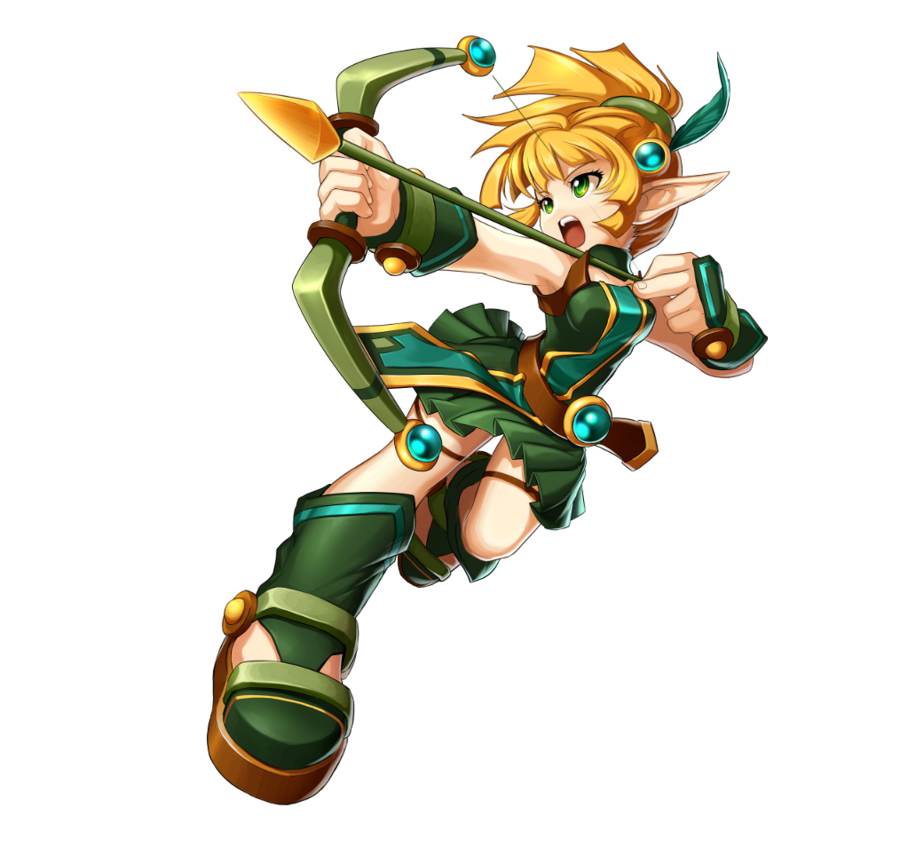
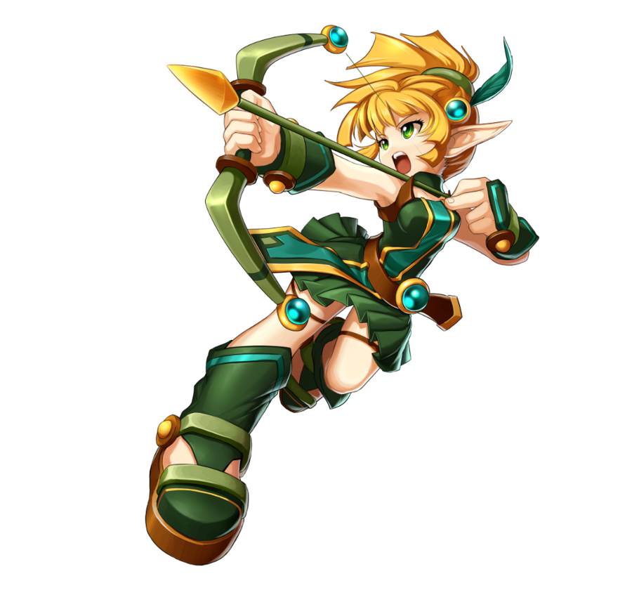

Nesse fã clube falaremos sobre esse jogo que sempre teve muitos fãs aqui no Brasil estamos falando do GC Grand Chase , que recentemente teve a sua volta anunciada de uma forma muito repentina surpreendendo a todos os seus fãs no nosso país. A sua volta foi anunciada em julho de 2021 pela plataforma de jogos steam. Com lançamento previsto para agosto do mesmo ano. Graças a esse fato, falarei nesse fã clube sobre alguns aspectos do jogo.
 
